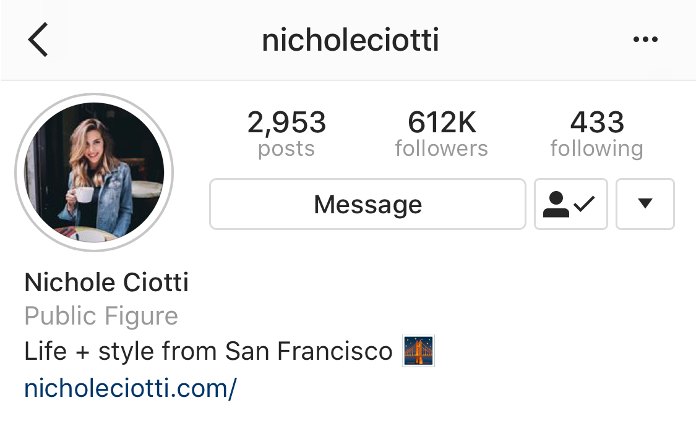
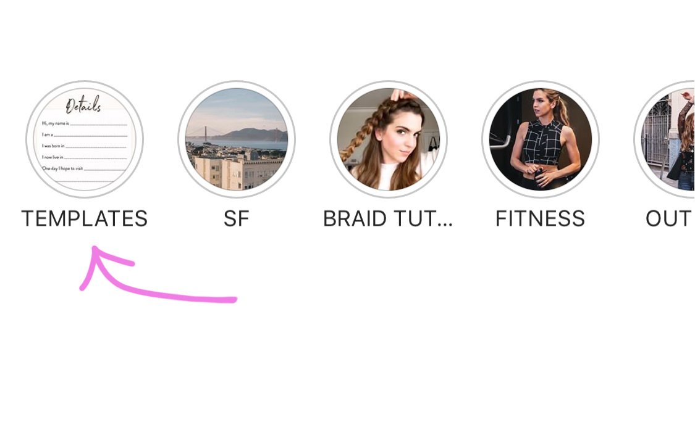

Step 1
Search for Nichole Ciotti in your Instagram app.
Step 2
Tap TEMPLATES in Nichole's highlighted story list on her profile.
Step 3
Tap through to the templates. Hold down on each template you like and screenshot to save.
Step 4
Add the screenshot to your story editor, fill in the blanks, and share on your story!